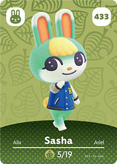
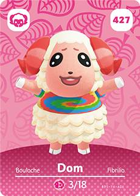
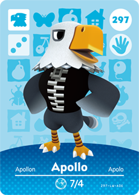
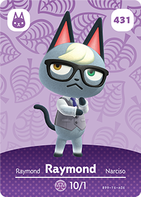
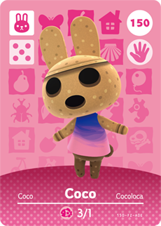
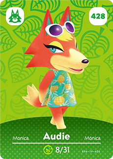
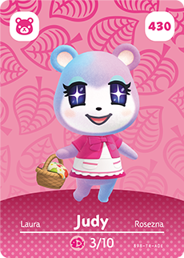
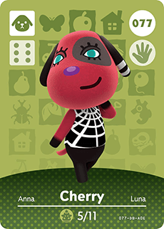
| Villager Personalities | Villager | |||||
|---|---|---|---|---|---|---|
| Personality | Description | Icon | Good Relationships | Bad Relationships | ||
| Personality 1 | Lazy | A male villager that is very friendly and laid-back. They have a love for food and are funny as well. | Lazy villagers get along well with Peppy, Smug, Cranky, and other Lazy villagers. | Lazy villagers can get into conflicts with Normal, Jock, Snooty, and Big Sister villagers. | Sasha 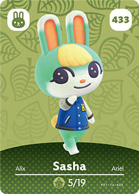 |
|
| Personality 2 | Jock | A male villager that is very energetic and has a passion for fitness. | Jock villagers get along well with Peppy, Smug, Normal, Big Sister, and other Jock villagers. | Jock villagers can get into conflicts with Lazy, Snooty, and Cranky villagers. | Dom 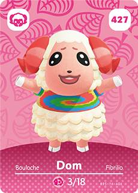 |
|
| Personality 3 | Cranky | A male villager that is always rude and stubborn. | Cranky villagers get along well with Snooty, Normal, Lazy, Smug, and other Cranky villagers. | Cranky villagers can get into conflicts with Peppy, Big Sister, and Jock villagers. | Apollo 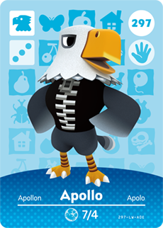 |
|
| Personality 4 | Smug | A male villager that is arrogant and think very highly of themself. They are also sophisticated and like to spread rumours. | Smug villagers get along well with Snooty, Peppy, Normal, Lazy, Jock, and other Smug villagers. | Smug villagers can get into conflicts with Cranky and Big Sister villagers. | Raymond 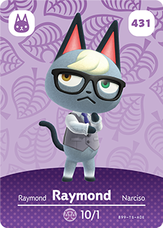 |
|
| Personality 5 | Normal | A female villager that is very kind and friendly. They love reading and cooking. | Normal villagers get along well with Peppy, Jock, Big Sister, Smug, and other Normal villagers. | Normal villagers can get into conflicts with Cranky, Lazy, and Snooty villagers. | Coco 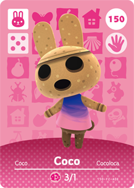 |
|
| Personality 6 | Peppy | A female villager that is energetic and excited. | Peppy villagers get along well with Normal, Jock, Big Sister, Smug, Lazy, and other Peppy villagers. | Peppy villagers can get into conflicts with Cranky and Snooty villagers. | Audie 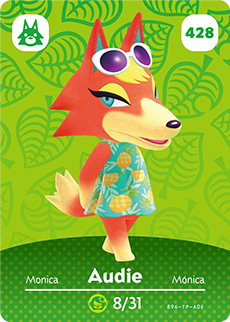 |
|
| Personality 7 | Snooty | A female villager that is arrogant and self-centered. They have an interest in fashion, makeup, and gossiping. | Snooty villagers get along well with Smug, and other Snooty villagers. | Snooty villagers can get into conflicts with Big Sister, Cranky, Lazy, Peppy, Normal, and Jock villagers. | Judy 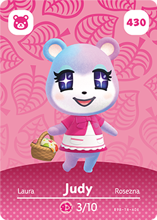 |
|
| Personality 8 | Big Sister | A female villager that is first seen as rude, but later opens up and becomes friendly and takes on the role of the tough big sister. | Big Sister villagers get along well with Peppy, Jock, Normal, and other Big Sister villagers. | Big Sister villagers can get into conflicts with Cranky, Lazy, Smug, and Snooty villagers. | Cherry 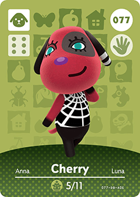 |
|